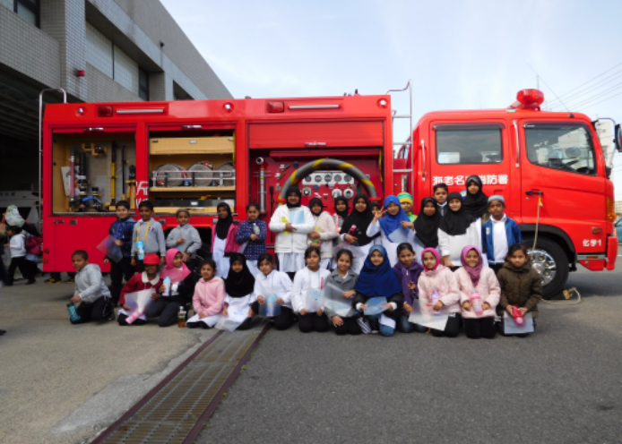
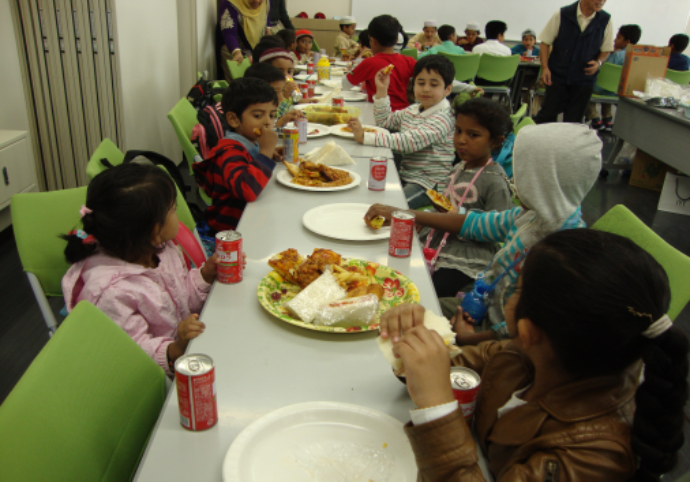
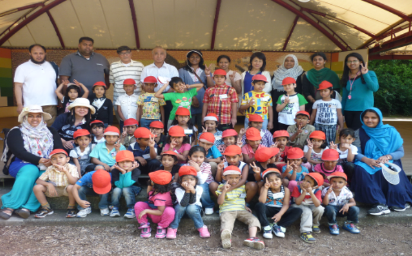

海老名で育つ、
世界基準の英語力と確かな日本語。
Cambridge International Curriculum Rooted in Japan
「英語を自然に話せる子に育てたいけれど、日本語が遅れないか心配…」そんなご家族の願いに応え、BIS Japanでは世界160カ国で採用されるケンブリッジ国際探究学習と、日本の小学校教科書を用いた毎日の国語教育を両立。保護者様が英語を話せなくても、専任スタッフが丁寧にお手伝いいたします。
- 3歳〜中学生・A-Level対応
- 幼保無償化で実質月謝0円〜
- 海老名・綾瀬 5km圏内送迎バス
幼児教育・保育の無償化適用時
実質月謝 0円〜17,000円
Cambridge Assessment
国際認定カリキュラム
日本の保護者様に選ばれる、3つの安心理由
都心の高額なスクールや、英語だけの偏った環境とは一線を画す、海老名ならではの温かなバイリンガル教育環境です。
「英語だけ」に偏らない。
確かな母国語（国語）を育成
インターナショナルスクールで最も心配される「日本語力の低下」。当校では文部科学省検定教科書を用い、日本人専任教員が毎日国語を指導。論理的に考える母国語の土台があるからこそ、深い英語表現力が育ちます。将来、日本の小学校・中学校への進学も安心です。
英語ゼロから歓迎。
少人数制の温かなアットホーム環境
入園時のお子様の約8割は英語学習が初めてです。歌やフォニックス、ゲームを通じて自然に言葉を吸収。日本人バイリンガル保育士・スタッフが常駐しているため、困ったときは日本語でしっかり受け止めます。連絡帳や面談も日本語で行うため、親御様の英語力は一切不要です。
幼保無償化で実質月謝0円〜。
地域に根ざした良心的な学費
都心校の年間250万〜350万円という費用とは異なり、2007年の設立以来、地域還元型の学費設計を維持。幼児部は国の無償化制度（月額3.7万円補助）で実質0円〜1.7万円、小学部も月額35,000円（税込）という、一般的な習い事と変わらない明朗な学費で最高水準の教育をお届けします。
年齢に合わせた一貫教育プログラム
幼児のフォニックスからケンブリッジ国際初等教育、プログラミングや将来の海外・国内大学進路まで段階的に育みます。

プリ・プライマリー（Nursery / LKG / UKG）
遊びを通じて英語のシャワーを浴びる言語習得の黄金期。イギリス発祥のジョリーフォニックスを取り入れ、無理のない自然なアプローチで正しい発音とリスニングを定着させます。同時に日本のひらがなや季節の行事、折り紙など母国語の豊かな情緒も大切に育みます。
- 🔤 フォニックス＆英会話（発音・リスニング）
- 🇯🇵 ひらがな・絵本読み聞かせ（日本語の基礎）
- 🔢 かぞえる算数・ブロック知育（数的感覚）
- 🎨 アート＆クラフト・表現活動（創造力）
- 🏃 リズム運動・室内体操（基礎体力）
- 🚌 専用スクールバス対応（5km圏内）
幼児部 授業料とお支払イメージ
- ✔ 一般世帯（Tayona）：実質 17,000円 / 月
- ✔ 企業主導型・住民税非課税世帯：実質 0円 / 月
- ✔ 兄弟姉妹割引・海老名綾瀬専用スクールバス運行

プライマリー（小学部 Grade 1 〜 Grade 5）
世界160カ国で採用されるケンブリッジ国際プログラム（Cambridge Primary）に準拠。算数・理科・ICTを英語で探究的に学ぶと同時に、文部科学省検定教科書を用いた本格的な日本語（国語）教育を毎日実施。論理的思考力とバイリンガル読解力を同時に磨き、将来の進路の選択肢を最大限に広げます。
- 📐 ケンブリッジ算数 (Mathematics)（問題解決型思考）
- 🔬 ケンブリッジ理科 (Science)（仮説検証・実験）
- 💻 コンピュータ・プログラミング（ICTリテラシー）
- 🇯🇵 日本語国語・漢字指導（文科省検定教科書・毎日実施）
- 🌍 社会・異文化理解・道徳（Global Perspectives）
- 🇫🇷 選択外国語（フランス語・アラビア語：Grade 6〜）
小学部 授業料
- ✔ ケンブリッジ認定カリキュラム・英語イマージョン
- ✔ 文科省検定国語教科書・日本人教員による毎日指導
- ✔ 少人数クラス（1クラス12〜15名目安）で丁寧な個別フォロー

中等部・高等部（Grade 6 〜 Pre-IGCSE / A-Level）
ケンブリッジ・ロワーセカンダリーからPre-IGCSE、世界共通の大学入学資格であるA-Levelへ進む国際進学コース。日本国内の難関大学（早稲田・慶應・上智・ICUなどの帰国生・総合型選抜入試）および英国・米国・カナダ・オーストラリアなど海外名門大学への直接進学を見据えた高度な批判的思考力、論文執筆力、ディベート力を養成します。
- 📊 Cambridge Lower Secondary（英語・高等数学・理科）
- 🌍 Pre-IGCSE / IGCSE対策（国際標準資格）
- 🎓 A-Level大学進学プログラム（英米・国内難関大対応）
- 🗣️ アカデミック・ライティング＆ディベート（論述力）
- 🇫🇷 第2外国語選択（フランス語 / アラビア語）
- 🧭 個別キャリア・進路カウンセリング（日英両言語）
中等部・高等部 授業料
- ✔ 世界基準のCambridgeセカンダリー・IGCSE対策
- ✔ 国内有名大学総合型選抜・海外大学出願の推薦書・面接対策
- ✔ 第2外国語（仏語・アラビア語）習得オプション
各学年の週当たり時間割、使用テキスト、行事カレンダーを掲載しています。
2026年4月改定 授業料と無償化シミュレーション
「インターナショナルスクールは高額」という常識を変える、国の助成金を活用した実質負担額をご確認ください。
🧮 かんたん学費シミュレーター
お子様の学年と自治体の助成対象を選択すると、毎月の実質負担額が即座に計算されます。
※送迎バスご利用時は別途実費。申請要件はお住まいの自治体規定に準じます。
全学年 授業料一覧表（すべて税込表示・2026年4月改定）
| 学年・クラス | 対象年齢 | 基本月額授業料 | 無償化適用後の実質負担 | 送迎バス |
|---|---|---|---|---|
| 幼児部（Pre-Primary: Nursery, LKG, UKG） | 3歳 〜 5歳 | ¥37,000 | ¥0 〜 ¥17,000 | 5km圏内運行（実費） |
| 小学部（Primary: Grade 1 〜 Grade 5） | 6歳 〜 10歳 | ¥35,000 | ¥35,000（税込） | 5km圏内運行（実費） |
| 中等部（Secondary: Grade 6 〜 Grade 7） | 11歳 〜 12歳 | ¥37,000 | ¥37,000（税込） | 公共バス/個別相談 |
| 高等部（Pre-IGCSE 〜 A Level） | 13歳以上 | ¥40,000 | ¥40,000（税込） | 海老名駅よりバス |
お子様一人ひとりに寄り添う、温かな教育チーム
経験豊富な外国人講師と、日本の教員免許・保育士資格を持つ日本人スタッフが連携してサポートします。
Mr. David Sterling
ケンブリッジ・プライマリー教務主任（英国出身）
英国エディンバラ大学教育学部卒（PGCE保持）。指導歴12年。「子供たちの『Why?（なぜ？）』を大切に、実験や対話を通じて自ら学ぶ喜びを引き出します。」
鈴木 美咲 先生
国語・児童保育主任（日本出身・小学校教諭免許）
公立小学校勤務を経て着任。「保護者様が英語を話せなくてもご安心ください。毎日の連絡帳や面談も日本語でいつでも丁寧にお応えします。」
Ms. Aisha Rahman
STEM＆プログラミング担当（カナダ出身）
トロント大学情報科学専攻。ロボット教材やタブレットを用い、論理的思考力と創造的な問題解決スキルを楽しく指導します。
「最初は不安でした…」ご家族からの体験談
海老名市・綾瀬市・大和市から通う在校生・卒園児の保護者様から届いたリアルなメッセージです。
「親が英語を話せなくても、全く問題ありませんでした」
夫婦ともに英語が得意ではなく、敷居が高いのではと恐る恐る見学へ。先生方の温かい笑顔と日本人スタッフの丁寧な説明に安心しました。年長になった今では、自宅でも英語の歌を口ずさみながら、ひらがなや絵本も大好きに育っています。無償化の申請も丁寧にサポートしていただきました。
「日本の教科書で国語を学べるから、将来の進路も安心」
英語漬けで母国語が疎かになるのだけは避けたかったので、公立学校と同じ国語教科書を毎日学習するカリキュラムが決め手でした。算数や理科はケンブリッジの英語テキストで主体的に学び、国語は美しい日本語の読み書きを習得しています。子供自身が学ぶ楽しさを実感しています。
「自宅近くまでの送迎バスと、毎日の連絡帳で安心」
共働きで毎日の送り迎えが心配でしたが、自宅近くまでスクールバスが運行しており大変助かっています。先生方がアプリや連絡帳でその日の様子をこまめに共有してくださるので、学校での笑顔が目に浮かびます。アットホームで家族のような温かい学校です。
笑顔あふれる日常と、多彩な学びのイベント
運動会や文化祭、海老名市内外への校外学習など、仲間とともに感動を共有する生き生きとした子どもたちの姿です。
 年1回 全校運動会
年1回 全校運動会
年1回 運動会・スポーツミート
年に1回開催される全校ビッグイベント。本格的な陸上競技場でハウスチーム対抗（赤白対戦）のスポーツ大会を開催し、団結力とフェアプレー精神を育みます。
 日本文化の尊重
日本文化の尊重
文化祭・伝統文化ステージ
浴衣や甚平を着て日本の昔話劇や歌を堂々と披露。日本の美しい伝統文化やマナーを誇りを持って学びます。

海老名市地域密着海老名市消防署 校外学習
海老名市消防署を訪れ、本物の消防車や隊員の仕事を間近で見学。地域社会への感謝と防災意識を体験的に学びます。
 卒業式・修了式
卒業式・修了式
卒業式・アワードセレモニー
制服（ブレザー）を着た子どもたちが保護者や教員の見守る中、1年間の成長と学問の努力を称え合います。
県内国際交流展
かながわ国際交流展 発表会
「かながわからせかいへ」をテーマに、生徒たちが英語と日本語で作成した探究ポスターをステージで発表。
 年1回 スクールトリップ
年1回 スクールトリップ
年1回 スクールトリップ（宿泊＆日帰り）
【Grade 4以上】年1回・2泊3日の宿泊体験学習（自然体験・探究プロジェクト）。【Grade 3以下・幼児部】年1回・日帰り遠足（動物園・自然公園）。学年に応じた自立心と知的好奇心を育みます。

お弁当持参（給食なし）お弁当ランチタイム・食育の時間
当校では給食の提供はなく、全生徒がご家庭からのお弁当を持参します。食物アレルギーも安心で、「いただきます」の挨拶や食への感謝を友達や先生と笑顔で分かち合います。

保護者・地域コミュニティファミリーピクニック・親睦会
保護者同士のつながりも深まるアウトドア親睦会。子育ての悩みや学校生活の相談も気軽に分かち合えます。
アクセス・スクールバス運行ルート
海老名駅からの公共交通アクセスに加え、学校から半径約5km圏内をご自宅付近までスクールバスが運行しています。
🚆 電車・路線バスでお越しの方
小田急小田原線・相鉄本線・JR相模線「海老名駅」東口バスターミナルより神奈中バス乗車。最寄り停留所より徒歩すぐ。
🚌 スクールバス送迎エリア（5km圏内）
海老名市・綾瀬市・大和市・厚木市周辺をご自宅付近まで運行中。安全運転ドライバーと添乗スタッフが同乗します。停留所や停車位置のご相談はお気軽にどうぞ。
🚗 お車でお越しの方（駐車場完備）
圏央道「海老名IC」または「寒川北IC」より車で約10〜15分。敷地内に見学者・送迎者用専用駐車場を完備しております。
保護者様からのご質問にお答えします
入園・入学前に多くいただくご質問をまとめました。気になる点がございましたら、お気軽にLINEやお電話でもご相談ください。
まずは実際のクラスをご見学ください。
無料体験レッスン受付中
お子様の年齢に合わせたクラスで、ネイティブの先生やお友達と一緒に実際のレッスンを体験（約45分）。無理な勧誘等は一切ございませんので、どうぞお気軽にご参加ください。
お電話でのご予約・お問い合わせ（平日 9:00〜18:00）
046-259-9108無料体験レッスンお申込みフォーム
必要事項をご入力の上、送信してください。（約1分で完了）
・室内履き（上履きまたはスリッパ）、外靴を入れる袋、筆記用具、お子様用の水筒をご持参ください。（※校内貸出用スリッパもご用意しております）
・お車でお越しの際は、敷地内専用無料駐車場をご利用いただけます。
・無理な勧誘やしつこい営業電話等は一切行いません。安心してご見学ください。